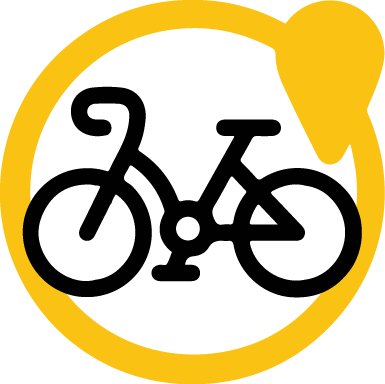

Ruta por Lestrobe e Padrón
Mapa Creado usandoGPS Visualizer Programa de emprego Xuventude Terras de Iria 2023
Por favor, espera mentras se carga o mapa...


Datos da Ruta Circular por Lestrobe e Padrón
- Dificultade técnica: Moderada
- Distancia: 24,68 km
- Desnivel: 279 m
- Altitude máxima: 161 m
- Altitude mínima: -29 m
- Tipo de roteiro: Circular
Símbolos no mapa
-
 Inicio da ruta
Inicio da ruta
-
 Fin da ruta
Fin da ruta
-  Punto de interese
-
Elevación (m)147.9111.174.337.60.8